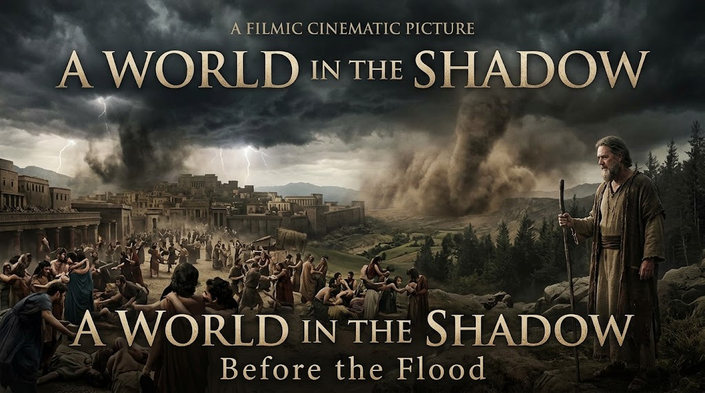
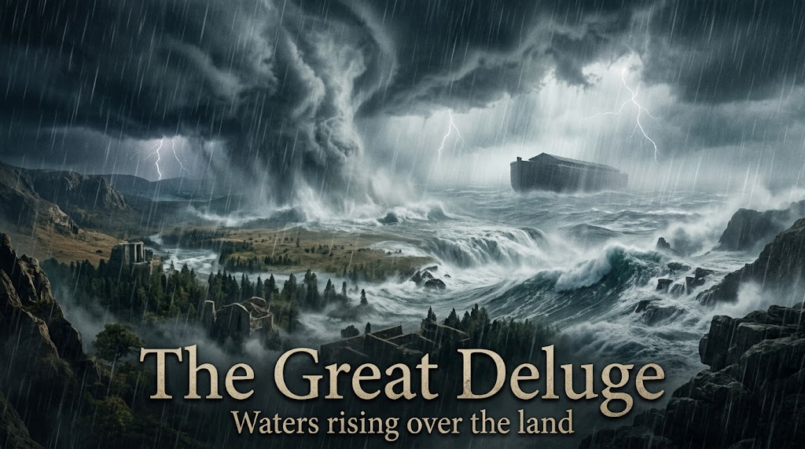
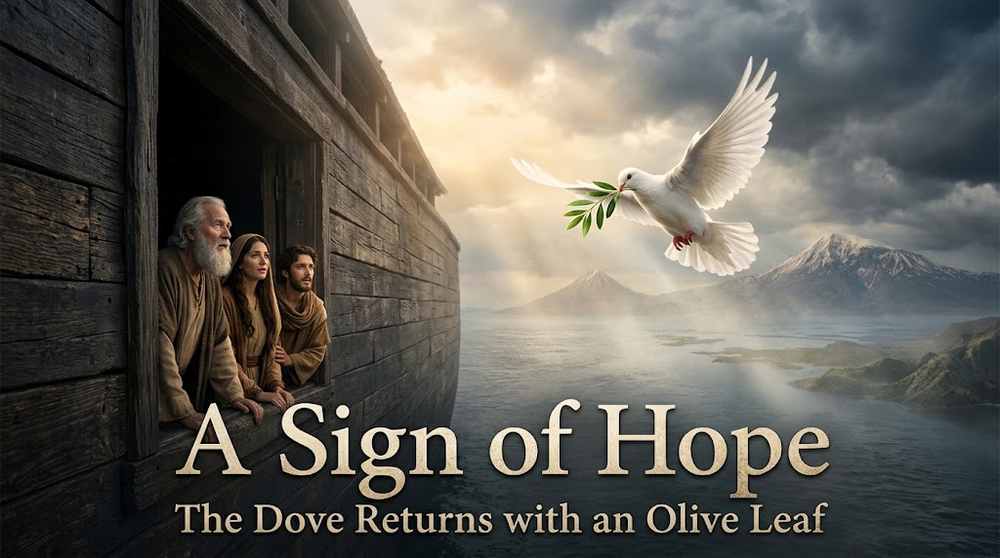

Noah and the Ark
An old story, told again. Before the forty days of rain, there was a man, a boat, and a promise that the world would not be given up on. This is our telling of Noah and the Ark, in our own words, with the old verses close at hand.
A world gone wrong
The story opens on a world that had forgotten its better nature. The book says the earth was filled with violence, and that God looked on it with grief, not only anger, but sorrow (Genesis 6:5-8). And yet, in the middle of that brokenness, one man found favor. His name was Noah. It is a small detail, and it changes everything: even in a world gone wrong, one good life still mattered.

The call and the plan
God spoke to Noah and told him the truth plainly: the waters were coming. But the message was not only about endings. God gave Noah a plan. Build an ark, a boat of wood, with rooms inside and pitch to seal it shut (Genesis 6:13-14). No miracle was promised to hold back the rain. Instead, Noah was given a task he could do with his own hands, and a promise that the work would save his family and the creatures of the earth.
Building the ark
Then came the long work. The Bible compresses years into a single line: Noah did everything just as God commanded him (Genesis 6:22). But between those words was sweat, patience, and a strange kind of faith. Neighbors must have asked why a man would build a ship where there was no sea. Noah kept building, and the ark took shape, board by board, under a clear sky.
Transcript
the world was filled with wickedness God
saw the corruption of the earth and
decided to cleanse it with a great
flood but Noah found favor in the eyes
of the Lord so God said to
Noah I am going to put an end to all
people for the Earth is filled with
violence because of them I am surely
going to destroy both them and the
Earth make yourself an ark of Cypress
Wood this is how you are to build
it the ark is to be 300 cubits long 50
cubits wide and 30 cubits
High make a roof for it leaving below
the roof an opening one cubit High all
around put a door in the side of the Ark
and make lower middle and upper
decks Noah did everything just as God
commanded him
then the Lord said to Noah go into the
ark you and your whole family because I
have found you righteous in this
generation take with you seven pairs of
every kind of clean animal a male and
its mate and one pair of every kind of
unclean animal a male and its mate and
also seven pairs of every kind of bird
male and female to keep their various
kinds alive throughout the Earth
Noah was 600 years old when the flood
waters came on the earth and Noah and
his sons and his wife and his sons wives
entered the Ark to escape the Waters of
the
flood for 40 days and 40 nights it
rained upon the Earth and as the waters
increased they lifted the ark high above
the Earth
the waters Rose and increased greatly on
the earth and the Ark floated on the
surface of the
water God remembered Noah and all the
wild animals and the livestock that were
with him in the ark and he sent a wind
over the earth and the waters
receded Noah then sent out a dove to see
if the water had receded from the
surface of the ground but the dove could
find nowhere to perch because there was
water over all the surface of the Earth
so it returned to Noah in the
ark he waited seven more days and again
sent out the dove from the
ark when the dove returned to him in the
evening there in its Beak was a freshly
plucked olive leaf
then Noah knew that the water had
receded from the
earth then God said to Noah come out of
the Ark you and your wife and your sons
and their
wives bring out every kind of living
creature that is with you the birds the
animals and all the creatures that move
along the ground so they can multiply on
the earth and be fruitful and increase
in number on it
then God said to Noah and to his sons
with him I now establish my Covenant
with you and with your descendants after
you and with every living creature that
was with you the birds the livestock and
all the wild animals all those that came
out of the Ark with you every living
creature on
earth I establish my Covenant with you
never again will all life be destroyed
By the Waters of a
flood never again will there be a flood
to destroy the Earth
The flood
The rains came. The book is specific: the springs of the deep burst open and the windows of heaven were opened, and it rained for forty days and forty nights (Genesis 7:11-12). The water rose until the highest mountains were covered. The ark did not steer itself. It was carried. For all of Noah's skill, the journey was finally not about control, but about trust.

The dove and the dry land
The waiting was its own trial. Noah sent out a raven, and then a dove, to learn whether the waters had gone down. The dove came back with nothing, and then with nothing again. Then, at last, it returned with a fresh olive leaf in its beak (Genesis 8:8-11). That small green thing said everything: somewhere, the ground was dry and life was returning. Hope had a sign.

The rainbow covenant
When the ark came to rest and Noah and his family stepped onto the new earth, God made a promise. Never again would the waters destroy the earth. And God gave a sign for it: a bow set in the clouds (Genesis 9:12-13). After every storm, the rainbow would remind the world that the promise still holds. It is a covenant, the story says, between God and all living things. Not earned. Given.